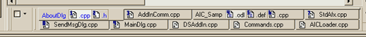

Number of tab rows
These options control the number of rows the tabs occupy. You may either specify a fixed number of rows, or select "automatic" in order to instruct
WndTabs to automatically adjust the number of rows to accommodate all tabs.
Note that if you specify a fixed row count of more than one, you will not be able to access tabs in higher rows. For instance, if you specify 2
rows and enough windows are open to occupy 3 rows, you will not be able to access the tabs in the 3rd row.
Stretch tabs when they take up more than one row
This option affect the display of multi-row tabs:
With the option enabled:

With the option disabled: